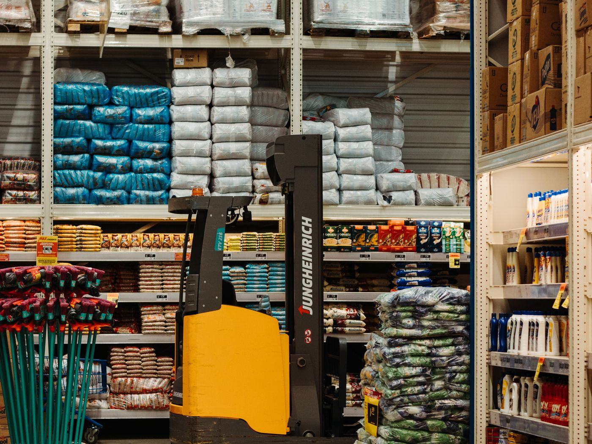
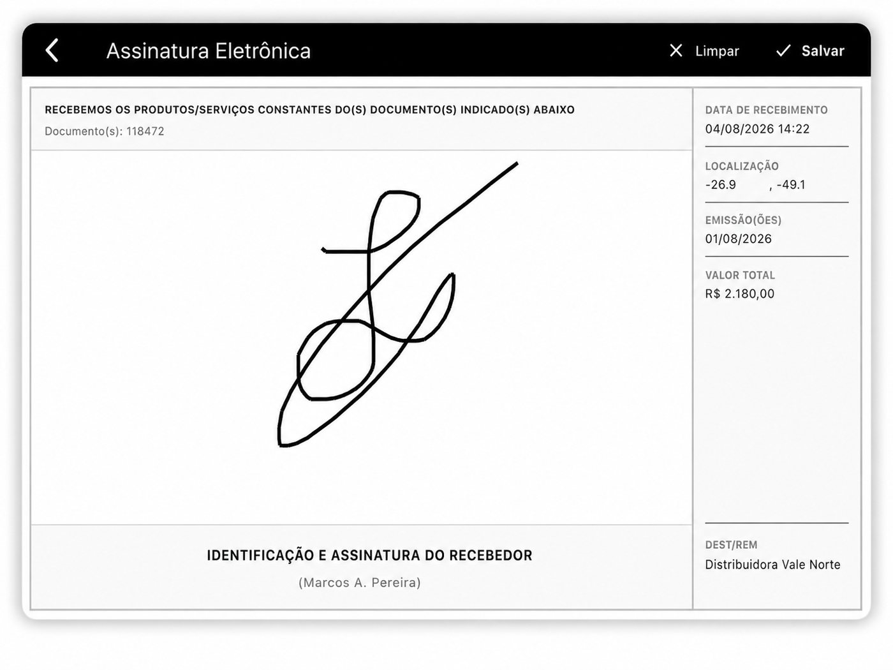

Menos tempo montando rota, menos telefone tocando.
Na distribuidora, alguém passa a manhã com as notas fiscais na mão, colocando as paradas em ordem: de 10 a 15 minutos por motorista. Depois, o dia inteiro atendendo ligação para saber onde está a entrega. A Grafos tira esses dois pesos da sua equipe.

O que muda na rotina da distribuidora.
- As notas do dia chegam do ERP e a ordem das paradas sai calculada.
- O cálculo respeita a janela de recebimento de cada cliente.
- As paradas são distribuídas entre os veículos conforme a capacidade de cada um.
- O comercial vê o andamento das entregas sem ligar para a expedição.
- Cada canhoto fica guardado no sistema, com foto, local, data e número da nota.
- Devolução volta com o motivo registrado, e a mercadoria não passa despercebida no CD.
Numa distribuidora cliente, a montagem de rotas caiu de 4 horas para 1h30 por dia.
Eram 2 pessoas, 2 horas cada, colocando nota por nota em ordem. Hoje 1 pessoa faz o mesmo em 1h30. A Grafos cresceu assim: o primeiro cliente de fora da loja da família foi uma distribuidora de alimentos em Gaspar.
Onde a distribuidora perde tempo e dinheiro.
Uma parada mal encaixada custa pouco. Repetida em 40 paradas, 6 veículos e 22 dias úteis, aparece no resultado do mês.
Rota montada à mão
Quem monta conhece a região, mas não consegue comparar todas as combinações entre dezenas de paradas e vários veículos. Sai uma rota boa, não a melhor, e leva tempo.
Janela perdida vira reentrega
O cliente só recebe até as 11h e o veículo chega ao meio-dia. A entrega volta e sai de novo no dia seguinte, com o custo inteiro outra vez.
Um motorista termina cedo, outro faz hora extra
Sem cálculo, a carga fica desequilibrada entre as rotas e a frota parece menor do que é.
O atraso só aparece quando o cliente liga
Sem acompanhamento, o problema chega pelo telefone, quando já não dá mais para corrigir.

Reentrega custa a viagem inteira de novo.
Combustível, espaço em outra rota e, muitas vezes, mais do que a margem da venda. As causas mais comuns têm solução direta na Grafos:
- Chegar fora da janela: a janela entra no cálculo da rota.
- Ocorrência sem registro: o motorista registra foto, horário e motivo no app.
- Endereço errado que se repete: o histórico mostra o cadastro que precisa ser corrigido.
- Divergência com o cliente: o comprovante resolve na hora, não uma semana depois.
O que a distribuidora pergunta.
Quantas paradas por rota a Grafos consegue calcular?
A roteirização foi feita para rotas densas, com dezenas de paradas por veículo, que é o dia a dia da distribuidora. O dimensionamento do seu volume a gente confirma na demonstração.
O sistema respeita a janela de recebimento do cliente?
Sim. A janela entra no cálculo junto com a capacidade do veículo e a região. Chegar fora da janela é uma das maiores causas de reentrega, por isso ela é regra, não sugestão.
A Grafos funciona com o meu ERP?
A integração é direta, sem planilha nem troca de arquivo. Já integramos com TOTVS, TOTVS Protheus, Winthor, Omie, Senior, Sankhya, CIGAM, SSW e Topsystem, entre outros. Dá para começar espelhando a rota que já sai do seu ERP e automatizar aos poucos.
Dá para replanejar durante o dia?
O painel mostra o andamento de cada rota. Assim dá para ver o atraso e redistribuir entregas ainda no expediente, em vez de descobrir no fechamento.
Em quanto tempo começo a usar?
A implantação leva em média de 30 a 45 dias, conforme a integração com o seu ERP e a agenda do seu time de TI. A montagem de rotas já fica mais rápida desde a primeira semana.
Traga um dia da sua distribuidora para a demonstração.
Volume de pedidos, veículos e janelas de recebimento. A gente mostra como esse dia fica roteirizado na Grafos.
Agendar demonstração